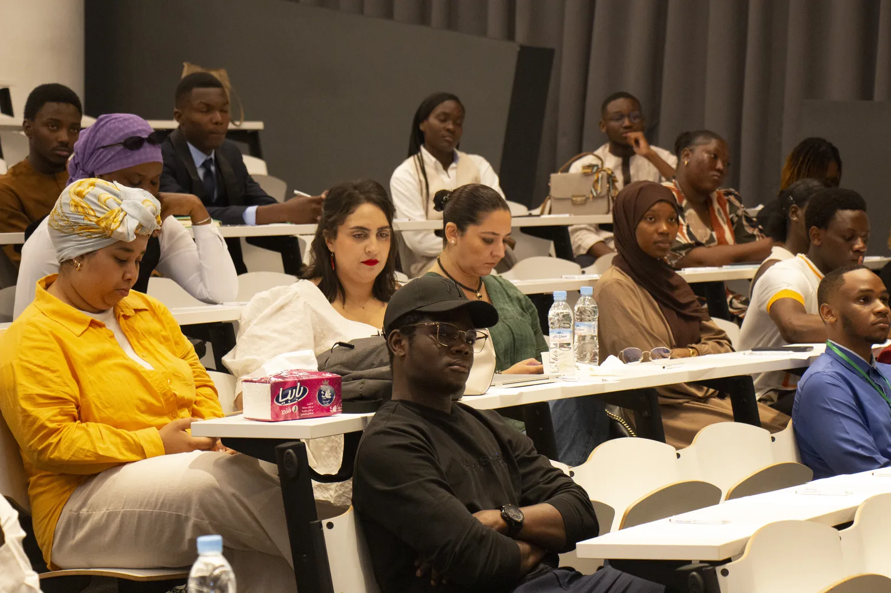
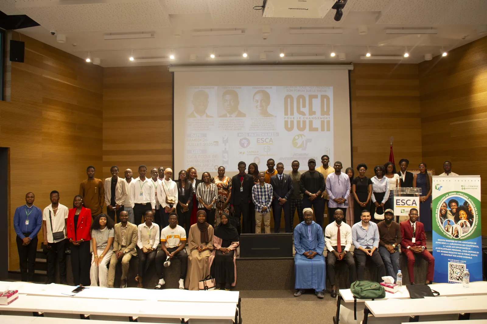
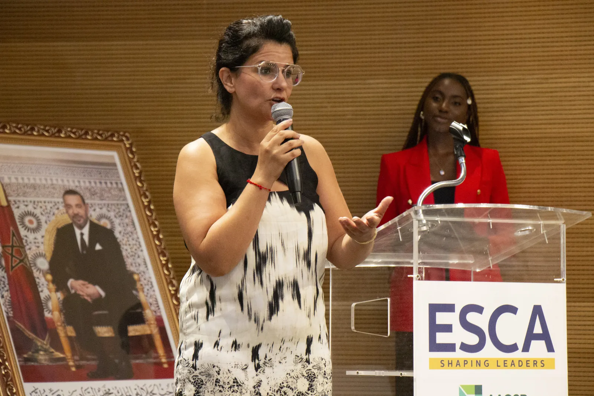
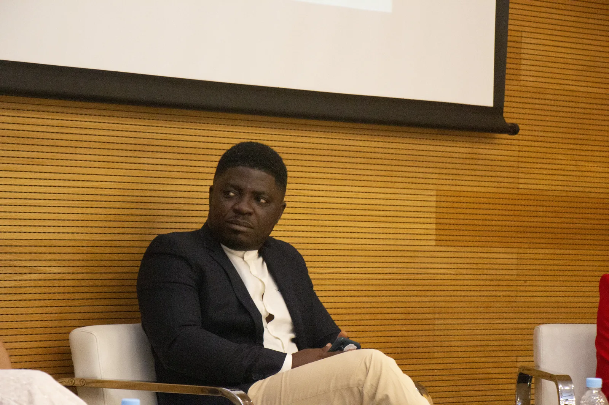
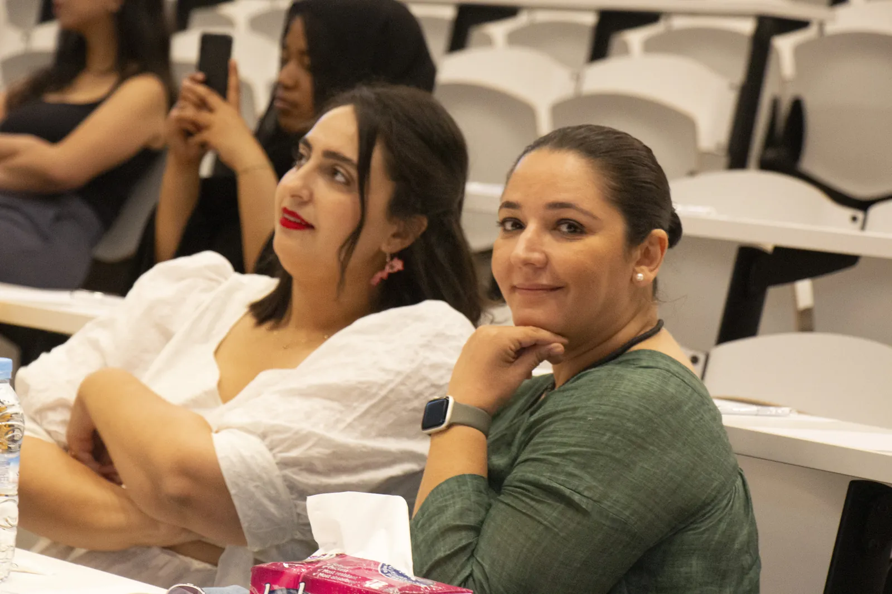
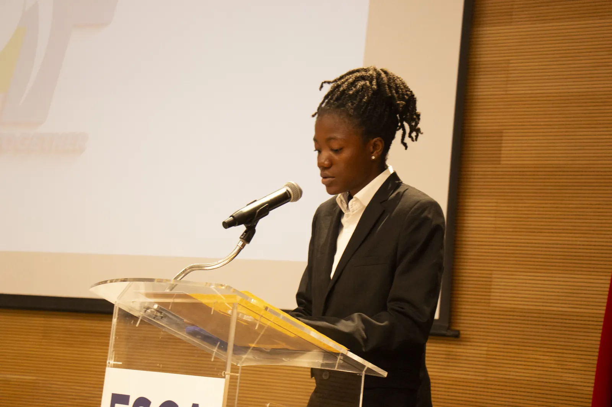
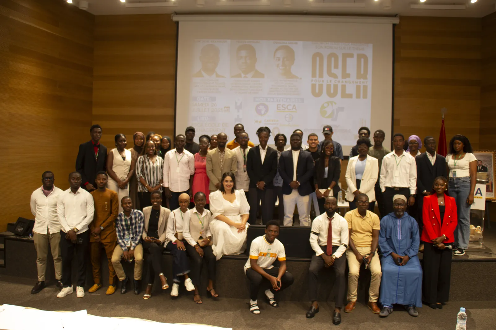
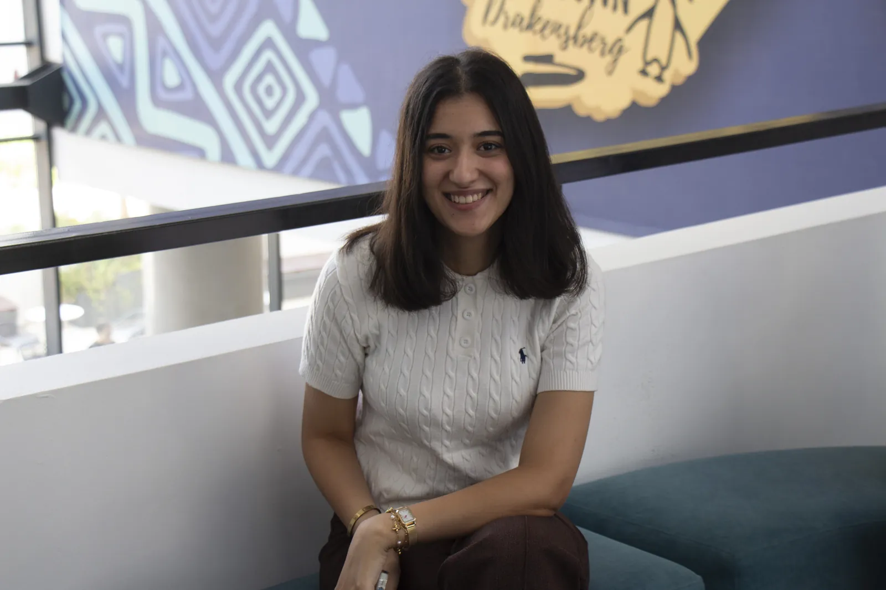
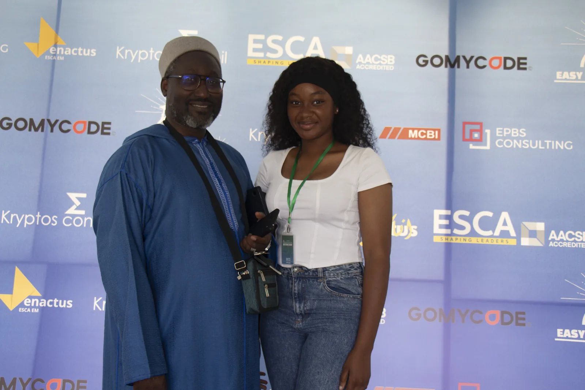
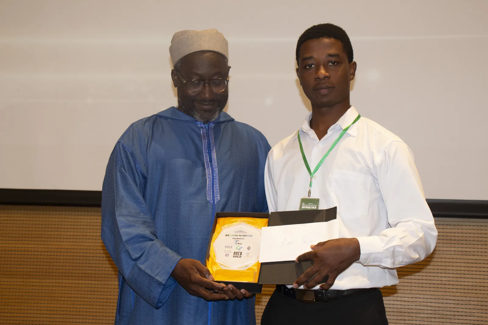

1. Le Grand Panel
Des entrepreneurs africains aguerris ont partagé avec authenticité leurs parcours, leurs échecs formateurs et les clés de la pérennité.
Le 27 Juin 2026, l'ESCA Casablanca a vibré pour l'entrepreneuriat et l'investissement africain. Retour sur une journée d'audace, de formations intensives et de connexions durables qui a marqué une génération de jeunes acteurs.
Pour cette 2ème édition, le Forum Growth Together a rassemblé des étudiants, diplômés et jeunes fondateurs venus de plusieurs pays d'Afrique (Maroc, Côte d'Ivoire, Gabon, Guinée, Togo, Burkina Faso, Bénin).
L'objectif fixé — briser l'isolement entrepreneurial et donner les outils méthodologiques du passage à l'action — a été pleinement concrétisé à travers 7 heures d'immersion intense rythmées par un grand panel, des masterclasses appliquées et un concours de pitchs d'un très haut niveau d'exigence.

Retour sur les moments clés qui ont rythmé le forum du matin au soir.
Des entrepreneurs africains aguerris ont partagé avec authenticité leurs parcours, leurs échecs formateurs et les clés de la pérennité.
Travaux en sous-groupes animés par des spécialistes pour challenger la proposition de valeur et affiner le plan financier.
8 finalistes ont présenté leurs projets devant un jury bienveillant mais rigoureux, bénéficiant de retours d'experts en direct.
Des connexions d'affaires solides nouées lors des pauses-cafés et la photo souvenir officielle réunissant toute la communauté.
Samedi 27 Juin 2026 — ESCA École de Management, Casablanca
Arrivée des délégations d'étudiants, remise des dossiers d'ateliers et installation dans l'amphithéâtre.
Discours d'introduction par les cofondateurs de Growth Together et rappel de la mission Ground. Grow. Widen.™.
Débat interactif entre intervenants d'honneur et les participants sur la posture entrepreneuriale.
Premiers échanges informels, rencontre des mentors et partage d'idées.
Prestations remarquées des 8 porteurs de projets devant le jury réuni à l'ESCA.
Sessions de travail intensif en petits groupes réparties dans les salles de cours de l'école.
Annonce des résultats, remise des distinctions et séance photo officielle de la promotion 2026.
Mot de conclusion inspirant et engagement pris pour la 3ème édition en 2027.
L'école nous a ouvert son amphithéâtre et ses salles de cours pour une journée complète d'échanges et d'ateliers.
Cliquez sur un cliché pour l'agrandir en plein écran (navigation par flèches clavier ou balayage tactile).









Vous souhaitez intervenir comme mentor, soutenir financièrement l'initiative ou proposer votre projet pour la prochaine édition ?